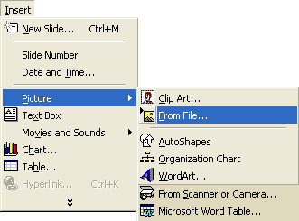
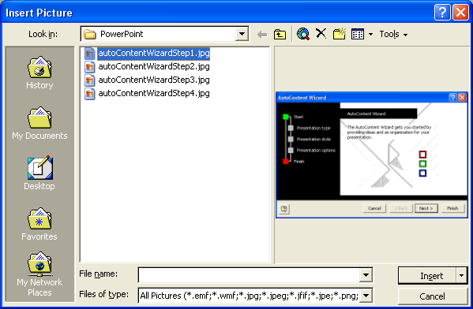
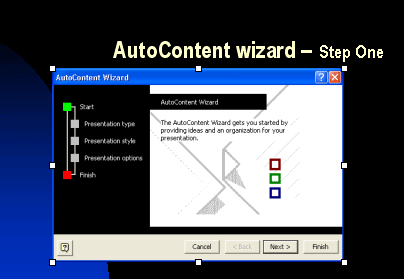
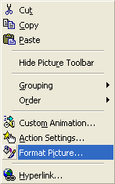
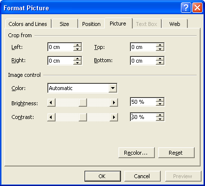
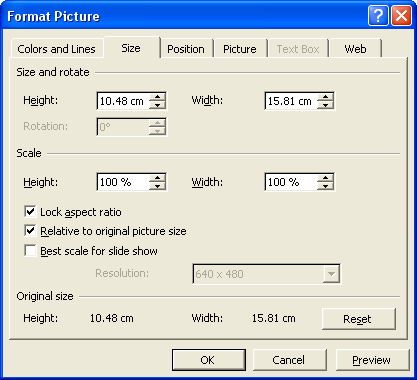
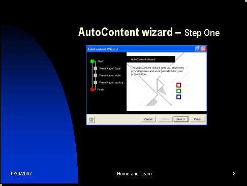

Free
powerpoint
Tutorials
|
Free
powerpoint
Tutorials
|
|
 home home |
Stay at Home and Learn | ||||
Add an Image to a PowerPoint Slide |
|||||
|
Part 1, 2, 3, 4, 5, 6, 7, 8, 9, 10, 11
On the next four slides, we'll have an image and a text box. The images will be the four steps of the Wizard, and the text box will contain a brief description of what the wizard is doing. You can find the images for this presentation by clicking the link below:
The first thing we need to do is to delete the text box that's holding the bullets. So, from the Outline View on the left, click on slide 3 to highlight it. The "AutoContent Wizard - Step One" slide should display on the main stage: Click anywhere inside the bulleted list, like you did previously. The outline of the text box should be showing. Click on the text box outline, and then press the Delete key on your keyboard twice. The text box and its contents should then vanish. Now we can insert an Image in place of the bulleted list. To insert an image on to slide 3, click Insert > Picture from the PowerPoint menu bar at the top. The Picture submenu should display:  The one we want is From File. But note the other picture options you have: Clip Art, AutoShapes, Organization Chart, Word Art, From Scanner or Camera, and Word Table. We'll see a few of these in action in later chapters. But for now, click on From File. When you do, you'll see an Insert dialogue box appear:  From the "Look in" dropdown list at the top, navigate to where on your hard drive you saved your downloaded images files to. Locate the image called autoContentWizardStep1.jpg. Click on this to highlight it, and then click the Insert button in the bottom right. The picture will appear on your slide 3. Your slide should now look like ours below: 
Resize and Move an ImageThe picture looks a bit big for the slide, and there's not much room for the text we want to add. To resize the image, make sure the image is selected. If it is, you'll see white squares or circles around the edges, as in the previous image. With the image selected, click it with the right mouse button. You'll then see the following menu:  Click on Format Picture, and you'll see the following dialogue box appear:  This is not the Tab we want, so click the Size tab to see the following settings:  Make sure there's a tick in the box that says Lock aspect ratio. If there's a tick in this box, when you change the height, the width will change automatically to match. That way, you don't end up with an odd-shaped image. On the Size tab, change the Scale > Height from 100% to 80%. You'll see the other values change by themselves. Click the Preview button at the bottom to see what the image looks like at this size. If you're happy with the size of your image, click OK. To move your image, click on it with your left mouse button. Hold the
left button down and drag to a new location. Aim for something like
ours below: 
In the next part, you'll see how to add a text box just below the image.
|
||||